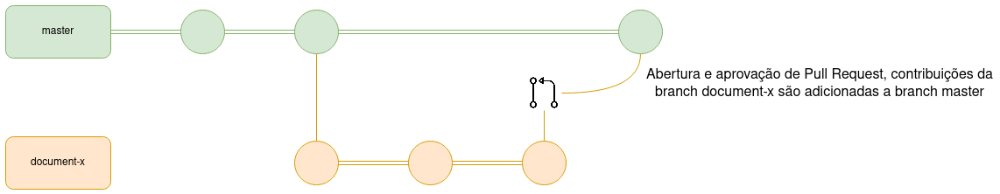
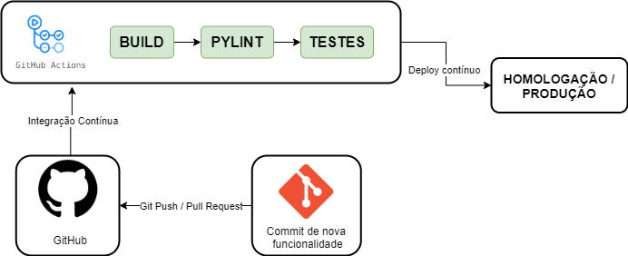

Plano de Gerência e Configuração de Software
1. Introdução
Este documento tem como objetivo apresentar as ferramentas, políticas e regras adotadas pelo projeto Stay Safe para auxiliar quem deseja contribuir.
2. Ferramentas
| Ferramenta | Finalidade |
|---|---|
| GitHub | Hospedagem e versionamento de código |
| GitHub Actions | Ferramenta de integração contínua |
| GitHub Pages | Hospedagem de página web para repositório GitHub |
| Docker | Ferramenta de isolamento de ambiente |
| Docker-Compose | Ferramenta de gerenciamento de containers |
| Flask | Framework de desenvolvimento backend |
| Pytest | Framework de teste Python |
| Coverage py | Ferramenta de cobertura de código Python |
| Pylint | Ferramenta de análise de código Python |
| React Native | Framework de desenvolvimento frontend |
| Jest | Framework de teste JavaScript |
| ESLint | Ferramenta de análise de código JavaScript |
| Prettier | Formatador de código automático |
3 Política de Issues
Caso encontre um bug ou tenha alguma sugestão de melhoria para o software é possível criar uma issue seguindo os passos abaixo:
- Escolha o tipo de issue a ser criado (funcionalidade, documentação ou correção de bug)
- Escreva um título sucinto para a issue
- Preencha a descrição da issue seguindo os passos e as orientações do template que será mostrado
- Preencha informações adicionais caso possua (executores, épico, marco, etc)
Tanto o título como a descrição da issue devem estar escritos em inglês e seguir suas regras de sintaxe e semântica.
4 Política de Branches
4.1 Repositórios de Código

O Git Flow dos repositórios de código será tratado da forma mostrada na imagem acima. Para uma mudança chegar a branch master (branch estável) os passos abaixo são seguidos:
- Toda nova branch deve ser feita a partir da develop
- Ao resolver a issue proposta a nova branch deve ser merjada e comparada em relação a develop
- Caso o PR seja aprovado pela equipe a nova branch será deletada e seu conteúdo integrado a develop
- Na develop será testada a integração entre as funcionalidades recentemente adicionadas
- Quando a equipe atestar a estabilidade da develop seu conteúdo é integrado a master
4.2 Repositório de Documentação

O Git Flow do repositório de documentação será tratado da forma mostrada na imagem acima. Para uma mudança chegar a branch master (branch estável) os passos abaixo são seguidos:
- Toda nova branch deve ser feita a partir da master
- Ao resolver a issue proposta a nova branch deve ser merjada e comparada em relação a master
- Caso o PR seja aprovado pela equipe a nova branch será deletada e seu conteúdo integrado a master
4.3 Regras de Nomenclatura
Toda nova branch criada nos repositórios Stay Safe deve se propor a resolver uma issue específica, o nome da branch deve seguir as seguintes regras:
- Conter o código da issue fornecido pelo GitHub
- Ser curto e expressivo a respeito da issue a ser tratada
- As palavras devem ser separadas por underscore "-"
- Ser escrito em "lower case"
Exemplo:
2-vision-document
5 Política de Commits
Os commits devem ser atômicos (uma contribuição pequena para resolver um problema específico). A mensagem do commit deve relatar o que foi feito de maneira sucinta e direta, além disso ela precisa estar em inglês, começar com um verbo e com a primeira letra maiúscula.
Contribuições feitas por mais de uma pessoa devem conter o comando "Co-authored-by" para identificar todos os autores envolvidos.
Exemplo de contribuição feita por um autor:
git commit -m "Add database diagram image."
Exemplo de contribuição feita por mais de um autor:
git commit -m "Create user model.
Co-authored-by: Pessoa <emailgit@email.com>"
6 Política de Pull Request
Para realizar um Pull Request (PR) para o repositório é necessário seguir os passos abaixo.
- Ao resolver uma issue suba suas contribuições e crie um Pull Request
- Escreva um título sucinto para o PR
- Preencha a descrição do PR seguindo os passos e as orientações do template que será mostrado
- Ligue o PR com a issue que ele resolve
- Preencha informações adicionais caso possua (executores, revisores, etc)
Um PR só poderá ser merjado após duas aprovações.
6.1 Política de Aprovação
Para um Pull Request ser aprovado nos repositórios de código a contribuição feita deve:
- Resolver apenas a issue específica ao qual se habilita a tratar
- Respeitar todos os critérios de aceitação definidos na issue
- Estar descrita na língua inglesa
- Possuir cobertura de testes
- Ser aprovada na integração contínua e nas ferramentas que ela executa
- Conter lógica eficaz para preservar performance do aplicativo
- Conter boas práticas de programação para preservar a qualidade do código
- Não adicionar nenhum comportamento inesperado ao aplicativo
Para um Pull Request ser aprovado no repositório de documentação a contribuição feita deve:
- Ser relevante para o projeto
- Resolver apenas a issue específica ao qual se habilita a tratar
- Respeitar todos os critérios de aceitação definidos na issue
- Estar na língua portuguesa e seguir as normas desta
- Estar na pasta e formato adequados
- Ser aprovada na integração contínua e nas ferramentas que ela executa
7 Política de Documentação
Para contribuir com a documentação do projeto as regras definidas de commit, issue e PR também se aplicam, além destas pedimos atenção aos pontos abaixo:
- Um novo documento deve ser criado dentro da pasta produto ou projeto dependendo do que ele trata
- Para adicionar imagens a um documento deve-se fazer o upload delas em uma nova sub-pasta dentro da pasta images. Exemplo: "images/NomeDoNovoDocumento/persona.jpeg"
- Todo documento deve conter um tópico de Introdução para dizer do que ele se trata
Caso o documento seja extenso e possua múltiplos autores um histórico de versão deve ser inserido ao final dele, respeitando as seguintes regras: o versionamento da documentação deve seguir um padrão X.Z, onde X e Z são numerais inteiros não negativos que crescem em ordem crescente.
Ao fazer grandes incrementos a variável X cresce (1.0, 2.0, 3.0) e ao fazer pequenos incrementos a variável Z cresce (1.1, 1.2, 1.3), ambas variáveis começam em zero e crescem de um em um. Ao subir a versão de X o valor de Z volta pra zero (1.4 -> 2.0). O documento só entra na versão 1.0 se naquele momento ele estiver teoricamente finalizado.
8 Continuous Integration/Deployment
8.1 Continuous Integration
Continuous integration (CI) é uma prática onde o código entregue por desenvolvedores passa por uma pipeline onde são feito validações do código entregue. No nosso projeto a pipeline usada está definida no tópico 8.3 desse documento.
8.2 Continuous Deployment
Continuous deployment (CD) é a entrega automatizada de releases de um software, onde é feito a validação do código pelo CI, caso o código passe pelo CI, é feito o Deploy desse código para um ambiente de produção.
8.3 Pipelines
Aqui é definido as pipelines seguidas para CI/CD do nosso projeto. São definidos duas pipelines, onde uma delas é para serviços de API e a outra para o front-end do projeto.
8.3.1 API

Etapas
- BUILD: É executado a build do projeto.
- PYLINT: É executado o Pylint a fim de verificar a qualidade de código e possíveis bugs. Nessa etapa é usado a folha de estilo pep8 como base. O Pylint gera uma nota de 0 a 10, onde usamos a nota 8 como nota mínima aceita, caso a nota seja inferior, será levantado um erro na pipeline.
- TESTES: São executados os testes unitários do projeto usando o pytest, após isso, é executado a cobertura de testes usando o Coverage.py
8.3.2 Front-end

Etapas
- BUILD: É executado a build do projeto usando o expo
- ESLint: É executado o ESLint a fim de verificar a qualidade de código e possíveis bugs. O ESLint retornará erros de códigos e warnings, caso seja retornado algum erro, a pipeline falhará.
- TESTES: São executados os testes unitários do projeto usando o Jest.